湖南省2026年普通高中学业水平选择性考试 物理
注意事项：1．答卷前，考生务必将自己的姓名、准考证号填写在本试题卷和答题卡上。2．回答选择题时，选出每小题答案后，用铅笔把答题卡上对应题目的答案标号涂黑。如需改动，用橡皮擦干净后，再选涂其他答案标号。回答非选择题时，将答案写在答题卡上。写在本试题卷上无效。3．考试结束后，将本试题卷和答题卡一并交回。
一、选择题：本题共7小题，每小题4分，共28分。在每小题给出的四个选项中，只有一项是符合题目要求的。
相关题目：第 1 题 · 第 2 题 · 第 3 题 · 第 4 题 · 第 5 题 · 第 6 题 · 第 7 题
返回原卷说明与一、单项选择题
题目与已知条件
某舰载机起飞时，在第2 s内的 — 图像如图所示，该段时间内舰载机加速度的大小为（ ）
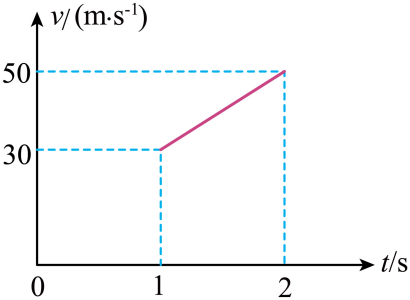
原题图分步解析
- 第2 s内速度由30 m/s增至50 m/s，历时1 s。
- 。
检查与易错点
第2 s内指1 s～2 s，不是0～2 s。
本题来源：doc-hunan
返回原卷说明与一、单项选择题
题目与已知条件
关于原子核衰变，下列说法正确的是（ ）
C.衰变产生的α粒子穿透能力强，可以穿透几厘米厚的铅板
D.理论研究表明，（氡核）可能在一次衰变过程中放出两个α粒子，则其衰变方程为
所用高中知识
衰变中质量数、电荷数守恒；α射线电离能力强、穿透能力弱。
分步解析
- α衰变放出 ，新核电荷数减2、质量数减4，A、B错误。
- α粒子穿透能力最弱，一张纸即可挡住，C错误。
- D中质量数 ，电荷数 ，均守恒，D正确。
本题来源：doc-hunan
返回原卷说明与一、单项选择题
题目与已知条件
郭守敬望远镜是我国首个天文领域大科学装置，积累了大量的观测数据。分析观测数据表明，某行星绕一恒星做匀速圆周运动的周期为 ，轨道半径为该恒星半径的 倍。不考虑其他星体的影响，引力常量为 ，则该恒星的平均密度为（ ）
A. C. 所用高中知识
万有引力提供向心力；。
读题与思路
用轨道半径 求质量再除以恒星体积。
分步解析
- ，。
- 。
检查与易错点
（近表面）时退化为熟悉的 ，可用于检验。
本题来源：doc-hunan
返回原卷说明与一、单项选择题
题目与已知条件
如图，均匀介质中有且仅有一个点波源产生简谐横波在 平面内传播，、 在 平面内。某时刻， 处质点位于波峰， 处质点位于波谷。下列说法正确的是（ ）
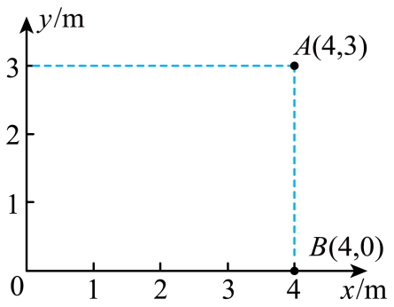
原题图A.若波源在 处，波长可能为1 m
B.若波源在 处，波长可能为2 m
C.若波源在 处，波长可能为3 m
D.若波源在 处，波长可能为4 m
所用高中知识
同一波源发出的圆形波，到波源距离差为半波长奇数倍的两点振动相反。
读题与思路
算出两点到波源的距离差 ，峰、谷对应 。
分步解析
- 波源在 ：，，，，可为2 m、 m……，不能为1 m，A错误，B正确。
- 波源在 ：，，同样 ，不可能为3 m或4 m，C、D错误。
检查与易错点
峰与谷要求距离差为半波长的奇数倍，而不是整数倍。
本题来源：doc-hunan
返回原卷说明与一、单项选择题
题目与已知条件
如图，电阻 的阻值为10 Ω，电流表为理想电表，两个电池组完全相同。若将 、 端分别接入 、 端，电流表示数为1.0 A；若将 、 端分别接入 、 端，电流表示数为1.5 A。则单个电池组的电动势和内阻分别为（ ）
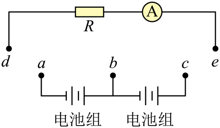
原题图所用高中知识
闭合电路欧姆定律；电池串联时电动势、内阻相加。
读题与思路
接 、 时只有一个电池组，接 、 时两电池组串联。
分步解析
- ，。
- 联立得 ，。
检查与易错点
两电池组同向串联，电动势与内阻都加倍。
本题来源：doc-hunan
返回原卷说明与一、单项选择题
题目与已知条件
如图，三个足够大的金属板A、B、C平行放置，B板到A、C板的距离分别为 、，。 点到A、B板的距离相等， 点到B、C板的距离相等。A、C板均接地，B板带电。关于 、 两点的电场强度 、 和电势 、，下列关系正确的是（ ）
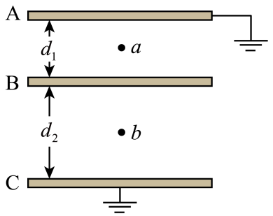
原题图所用高中知识
匀强电场 ；电势沿场线线性变化。
读题与思路
A、C都接地，B与两板的电势差相同，距离小的一侧场强大；两点都位于各自间隙的中点。
分步解析
- 设B板电势为 ，则 。，A正确，B错误。
- 、 分别是两个间隙的中点，，C、D错误。
检查与易错点
不论B板带正电还是负电，两中点电势都相等。
本题来源：doc-hunan
返回原卷说明与一、单项选择题
题目与已知条件
如图，一心形玩具气球内密封一定质量的理想气体和一个充有同种气体的弹性小气球，心形气球体积始终不变。在心形气球内，小气球内部气体压强大于外部气体压强，整个系统导热良好。初始时，小气球的体积为心形气球体积的一半。当温度缓慢升高时，忽略温度变化对气球材料性质的影响，下列说法正确的是（ ）
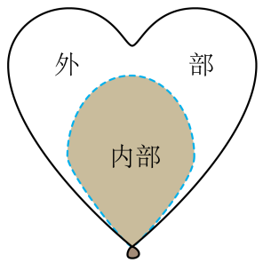
原题图所用高中知识
理想气体状态方程；弹性膜两侧压强差由膜的形变决定。
读题与思路
假设小气球体积不变，看两侧压强差如何变化，与膜能提供的压强差比较。
分步解析
- 若小气球体积不变，内外气体都等容升温，、 都按 增大，压强差 也按同样比例增大。
- 而膜形变未变，能提供的压强差不变，于是内部气体“压强偏大”，小气球将膨胀，体积变大，C错误，D正确。
- 外部气体温度升高且体积减小，压强增大，A错误。
- 初始两部分体积相同、温度相同，内部压强更大，故内部分子数多于外部，B错误。
检查与易错点
小气球与外部气体同温，不能只看温度；关键是两侧压强差与膜形变的对应关系。
本题来源：doc-hunan
二、选择题：本题共3小题，每小题5分，共15分。在每小题给出的四个选项中，有多项符合题目要求。全部选对的得5分，选对但不全的得3分，有选错的得0分。
相关题目：第 8 题 · 第 9 题 · 第 10 题
返回二、多项选择题（15分）
题目与已知条件
如图，一块高功率芯片上方紧贴着一个均热板散热器。均热板是一个完全密封的扁平纯铜空腔，空腔内部注有微量的水。在正常工作过程中，水从高温芯片处吸收热量汽化，水蒸气在低温冷凝端放出热量变回液态水，并回流到底部。下列说法正确的是（ ）
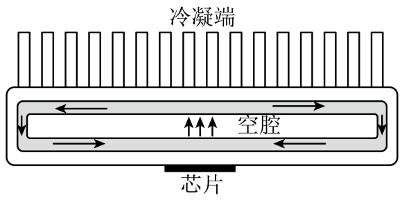
原题图A.空腔内高温处所有水分子的运动速率都比低温处水分子的运动速率大
C.该均热板可以从高温物体吸热，向低温物体放热，不对外界做功
D.该均热板可以从低温物体吸热，向高温物体放热，而不产生其他影响
所用高中知识
温度是分子平均动能的标志；汽化吸热、分子势能增大；热力学第二定律。
读题与思路
区分“平均”与“所有”，并用热力学第二定律判断热量传递方向。
分步解析
- 温度高只说明分子平均动能大，并非每个分子速率都大，A错误。
- 同温汽化吸热，分子平均动能不变而分子势能增加，内能增大，B正确。
- 热量自发由高温传向低温，均热板只是加快传递，无需对外做功，C正确。
- 由低温向高温传热而不产生其他影响违反热力学第二定律，D错误。
检查与易错点
“所有分子”“不产生其他影响”是常见的绝对化陷阱。
本题来源：doc-hunan
返回二、多项选择题（15分）
题目与已知条件
如图，某同学将两个相同的球形氦气球用等长的轻绳系在一起，拉着绳使气球随人一起做水平匀速运动。运动过程中，球心始终在绳的延长线上且球心连线水平，两绳所构成的平面与水平面的夹角为 （），两球间的弹力为 。气球受到空气阻力的大小与相对空气的速率成正比，空气始终相对于地面静止，忽略气球形状的变化。该同学沿原方向运动速度缓慢增大，下列说法正确的是（ ）
原题图读题与思路
把每个气球受到的浮力（净升力）与阻力合成，与绳拉力在两绳平面内的分量平衡；两绳夹角由几何固定。
分步解析
- 每个气球受竖直向上的净浮力（浮力减重力，大小不变）、水平向后的阻力 、绳的拉力 和另一球的水平弹力 。
- 设两绳与平面中线的夹角为 （由绳长与球半径决定，保持不变）。沿中线方向： 平衡净浮力与阻力的合力，中线与水平面夹角满足 。
- 增大， 减小， 减小，B正确，A错误。
- 增大，弹力 随之增大，C正确，D错误。
检查与易错点
两绳之间的夹角由几何关系固定，变化的是两绳平面的倾角和拉力大小。
本题来源：doc-hunan
返回二、多项选择题（15分）
题目与已知条件
某小组设计了一磁悬浮装置。如图，环形通电线圈固定在水平面上，其上方固定一半径为 的环形细管道，管道任意处磁场方向与竖直方向夹角为45°。质量为 的带正电小球在环形管道中以某一速率做匀速圆周运动，此时小球与管道间无弹力，重力加速度为 。下列说法正确的是（ ）
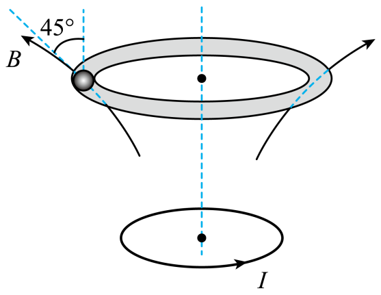
原题图B.小球做圆周运动的周期为
C.小球做圆周运动的半个周期内洛伦兹力的冲量大小为
D.若小球的绕行方向不变，速率为其做匀速圆周运动速率的2倍，则小球与管道间的弹力大小为
所用高中知识
洛伦兹力方向（左手定则或 ）；匀速圆周运动；冲量的矢量性。
读题与思路
洛伦兹力须有竖直向上分量平衡重力、水平指向圆心分量提供向心力；磁场斜向外上方，两分量相等。
分步解析
- 磁场斜向上、向外与竖直成45°。设洛伦兹力 ，其方向垂直于 与 。要使 斜向上且指向圆心，俯视时小球应沿顺时针方向运动，A正确。
- ，，得 ，，B错误。
- 半个周期内，竖直分量冲量 ；水平分量冲量等于水平动量变化 。合冲量 ，C错误。
- 速率加倍，洛伦兹力加倍：竖直向上 ，水平向心 。所需向心力 ，管道需提供水平向心 、竖直向下 ，弹力 ，D正确。
检查与易错点
洛伦兹力的冲量不能用“力×时间”直接计算大小，因为方向在变；要分解后用动量定理。
本题来源：doc-hunan
返回三、非选择题（57分）
题目与已知条件
某同学借助视频分析软件进行“用单摆测量重力加速度”的实验，步骤如下：
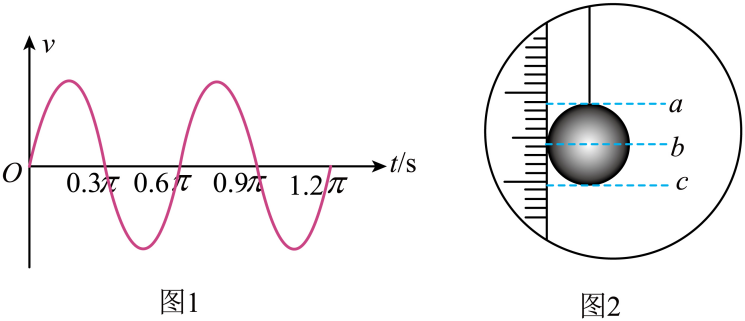
图1 拟合后的 v—t 图像；图2 摆长测量
（1）准备好单摆，用支架将手机竖直放置。
（2）打开手机录像，将单摆拉离平衡位置4°摆角由静止释放。
（3）将录制的视频导入软件进行分析，得到摆球的 — 图像，拟合后如图1所示，可知此单摆的周期 为______s。
（4）如图2，用刻度尺测量单摆摆长，该同学将刻度尺竖直放置，刻度尺0刻度线与单摆悬点对齐，读出______（填“”“”或“”）位置的读数，该读数即为摆长 。
（5）重力加速度 ______（用题中给出的字母“”和“”表示）。
（6）该同学发现所得实验结果小于当地重力加速度，可能的原因是刻度尺0刻度线______（填“高于”或“低于”）悬点。
所用高中知识
单摆周期 ；摆长为悬点到球心的距离；误差分析。
分步解析
- （3）由图1，速度变化一个完整周期为 （约1.88 s），。
- （4）摆长到球心，读 处读数。
- （5）。
- （6） 偏小说明 测小了；若0刻度线低于悬点，读数比真实摆长小，故为“低于”。
答案
（3） （4） （5） （6）低于
本题来源：doc-hunan
返回三、非选择题（57分）
题目与已知条件
某探究小组用霍尔元件设计了一个测量微小位移的实验装置。
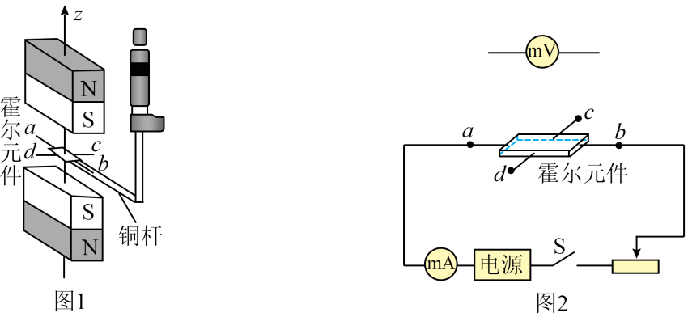
图1 装置示意；图2 工作电路
（1）将螺旋测微器通过铜杆连接霍尔元件。霍尔元件伸入两块磁感应强度相同、同极相对放置的磁体间隙中，并处于两磁体中心竖直线上。以中心竖直线为 轴，其示意图如图1所示；霍尔元件上的导线与外部工作电路连接，其示意图如图2所示。
（2）将电压表接在霍尔元件的______（填“、”或“、”）两端，闭合开关S，测量其霍尔电压，电压表指针如图3所示，此时电压为______mV。
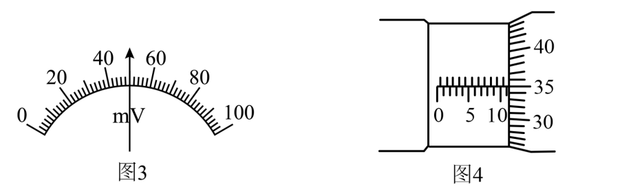
图3 电压表；图4 螺旋测微器
（3）旋转螺旋测微器的旋钮，使霍尔元件沿 轴移动至霍尔电压为0处，该处磁感应强度为0，此时的螺旋测微器读数如图4所示，该读数为______mm。
（4）保持电流不变，旋转螺旋测微器的旋钮，读出霍尔元件在不同位置的霍尔电压，得到10组数据如下表所示。
| 1 |
11.670 |
9 |
| 2 |
11.960 |
16 |
| 3 |
12.302 |
25 |
| 4 |
12.633 |
35 |
| 5 |
12.952 |
42 |
| 6 |
13.270 |
48 |
| 7 |
13.594 |
57 |
| 8 |
13.930 |
67 |
| 9 |
14.246 |
74 |
| 10 |
14.585 |
81 |
（5）在图5中描出第4、5组测量数据的坐标点，并作出 — 图像。______
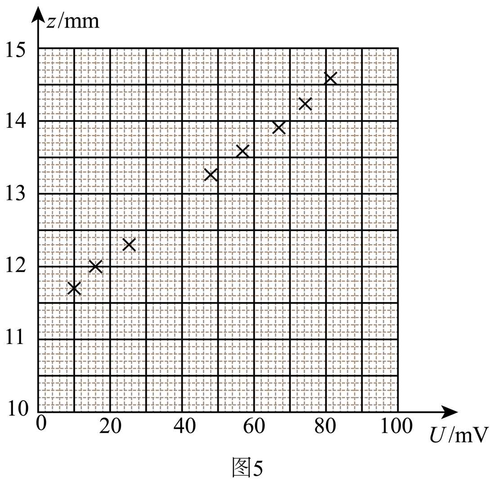
图5
（6）用此装置测量微小位移。取下螺旋测微器，将待测物体与铜杆连接，待测物体在 轴方向移动，其位移与霍尔元件的位移相等。某次测量中待测物体移动前电压表示数为20 mV，移动后电压表示数为60 mV，根据图像，此过程中物体位移的大小为______mm（保留2位小数）。
所用高中知识
霍尔效应（霍尔电压在垂直电流方向的两侧面产生）；螺旋测微器读数；图像法。
读题与思路
工作电流从 、 通过，霍尔电压在 、 间；由图线斜率把电压变化换算为位移。
分步解析
- （2）电压表接 、；表盘0～100 mV，指针指在中央，读数50 mV。
- （3）固定刻度读11 mm（半毫米刻线未露出），可动刻度对齐35.0格：（11.349～11.351均可）。
- （5）描出 、 两点，各点近似共线，作一条直线。
- （6）由所作直线求斜率，约 （最小二乘拟合为0.040）。电压由20 mV变为60 mV，，原卷参考取1.55 mm。
答案
（2）、；50 （3）11.350 （5）描点后作一条直线（图见解析） （6）1.55（1.55～1.60均合理）
检查与易错点
霍尔电压与工作电流方向、磁场方向都垂直；作图后用斜率换算位移，不要直接用表中某两点。
本题来源：doc-hunan
返回三、非选择题（57分）
题目与已知条件
车载摄像头需要有较大的拍摄角度。一摄像头由于结构限制，拍摄角度为120°。如图，将摄像头嵌入均匀透明介质，介质截面为矩形。只考虑该截面内光线传播情况，通过空气与介质间界面的折射，可将实际拍摄角度扩大。
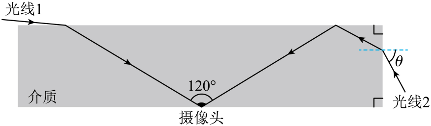
原题图
（1）若希望几乎贴着介质表面入射的光线1能够以图示路径恰好射入摄像头，即拍摄角度扩大为180°，求介质的折射率；
（2）若介质折射率为1.8，从侧后方向入射的光线2能够以图示路径折射之后发生一次全反射，然后恰好射入摄像头，求光线2的入射角 的正弦值。
读题与思路
摄像头视场边缘光线与竖直方向成60°；（1）掠射入射时折射角即为60°；（2）先由全反射后的方向倒推侧面上的折射角。
分步解析
- （1）光线1入射角近90°，在介质中沿视场边缘到达摄像头，折射角为60°。。
- （2）光线2在上表面全反射后沿与竖直成60°的方向射向摄像头，则反射前与竖直也成60°，即与水平方向成30°（入射角60°大于临界角，，确能全反射）。
- 侧面竖直，法线水平，折射角为30°：。
答案
（1）；（2）
检查与易错点
侧面的法线是水平方向，折射角要相对水平法线量取。
本题来源：doc-hunan
返回三、非选择题（57分）
题目与已知条件
某小组制作了一储能器，其两端电压 与其储存的电荷量 间的函数关系近似为 （ 为常量）。将该储能器接入如图所示电路，、、 为固定的三个触点。两足够长的平行金属导轨固定于水平面上，电阻不计，间距为 。导轨间有竖直向下的匀强磁场，磁感应强度为 。质量为 的导体棒垂直导轨放置，接入电路的阻值为 。电源电动势为 ，内阻不计。定值电阻阻值为 。 时刻开关S与 连接，直到导体棒做匀速运动，再于 时刻切换开关与 或 连接。运动过程中导体棒与导轨始终垂直且接触良好，忽略摩擦。
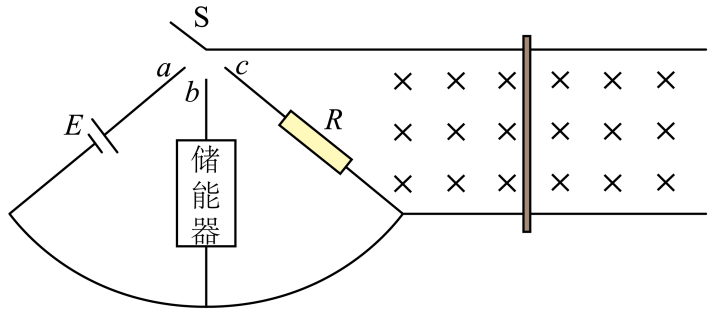
原题图
（1）求 时刻导体棒加速度 的大小；
（2）若 时刻开关与 连接，储能器接入电路前电压为0，当储能器电压为 时（此时电路中电流不为0），求导体棒速度 的大小；
（3）若 时刻开关与 连接，求从 时刻起到导体棒静止的过程中，导体棒上产生的焦耳热 。
所用高中知识
安培力；电磁感应中的动量定理 ；能量守恒与焦耳热分配。
读题与思路
接 时电源驱动导体棒直到反电动势等于 ；接 时导体棒给储能器充电，电荷量与动量变化对应；接 时动能在 、 上按电阻分配。
分步解析
- （1） 时棒静止，，。
- 匀速时 ，。
- （2）充电电荷量 ，由动量定理 ，。
- （3）加速阶段电源做功 ，其中 ，；动能增加 ，棒上焦耳热 。
- 减速阶段动能 全部转化为焦耳热，棒上分得 。
- 。
答案
（1）；（2）；（3）
检查与易错点
加速阶段电源输出的能量一半成为动能、一半成为焦耳热；不要漏掉这一段的焦耳热。
本题来源：doc-hunan
返回三、非选择题（57分）
题目与已知条件
如图，长为 的轻杆竖直放置，上端固定一质量为 的小球，下端连接于水平地面上某固定点，杆可绕该点无摩擦转动。小球内部安装了质量不计的智能弹射装置。受轻微扰动后，小球和杆从静止开始一起运动，当两者间弹力为0时，小球脱离轻杆，重力加速度为 ，不计空气阻力。
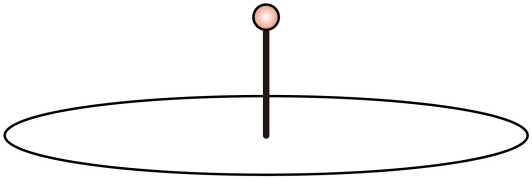
原题图
（1）求小球接触地面瞬间的速度 的大小；
（2）求小球接触地面瞬间的速度与水平面夹角 的正切值；
（3）小球与地面碰撞前后，竖直方向分速度大小相等、方向相反，水平方向分速度相等。碰撞后瞬间，智能弹射装置工作，小球在极短时间内分裂成两部分，两部分速度方向均与小球分裂前瞬间的速度方向成 角（ 已知，且 ）。设两部分质量之比为 ，弹射装置释放的能量为 。
（i）求 与 的关系；
（ii）当 最小时，若分裂后两部分第一次落地时刻相同，求两部分第一次落地点的间距 。
所用高中知识
竖直面圆周运动的脱离条件；机械能守恒；斜抛运动；动量守恒与爆炸能量。
读题与思路
轻杆弹力为零时重力的法向分量恰好提供向心力；分裂过程垂直于原速度方向的动量为零。
分步解析
- （1）全过程只有重力做功：，。
- （2）脱离时杆与竖直成 ：，，得 ，。此后水平速度不变：，。
- 落地时 ，。
- （3）（i）碰后速度大小 。设两部分质量 、，动量大小 、。垂直于 方向：，故 ；沿 ：。
- 。
- （ii）， 时 最小，两部分速度均为 。落地时刻相同要求竖直分速度相同，故两速度关于原速度所在的竖直面左右对称：竖直分量均为 ，侧向分量均为 、方向相反。
- 飞行时间 ，。。
答案
（1）；（2）；（3）（i）；（ii）
检查与易错点
若两部分在同一竖直面内分开，竖直分速度不同、不会同时落地；同时落地要求左右对称分开。
本题来源：doc-hunan
题源与核验说明
- 2026年高考真题——物理（湖南卷） Word版含解析（网络收集版）.docx所附湖南卷（网络收集版，含参考解析）；SHA-256：06e81c7040d63ea4dfd1c239e2b4059551d1661d0ca50935c610ce41e92edd08
- 2026年高考真题——物理（湖南卷） Word版无答案（网络收集版）.docx所附湖南卷无答案版；SHA-256：6f2b75744d200c8379be066e5a60f97d30f4b4bf62615bf64d7e38810c9a1b6f
- 所附湖南卷原卷文件（网络收集版）逐题转录题干、选项、数据表与图；参考解析仅作推导后的交叉核对。